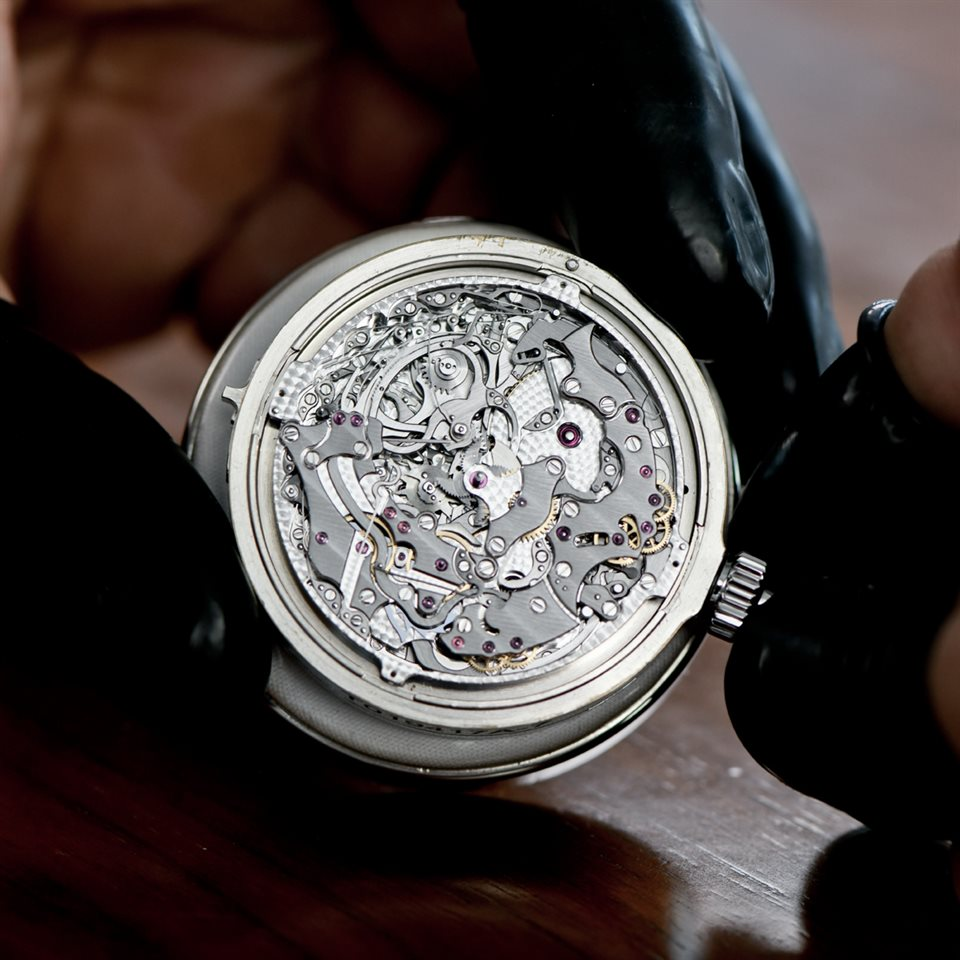

After-Sales Service
維修保養
-

鐘錶養護
-

保養保固
-

專業諮詢
FAQ
腕錶使用與保養須知
多久要洗油保養？是錶主非常關心的問題，即使目前走時正常，機芯內精密的擒縱結構與寶石軸承需要適當潤滑。一般而言，多數機械錶的洗油保養週期約為 3～5年，但仍要配合佩戴頻率、走時狀況與測試數據判斷。實際週期會受到佩戴頻率、使用環境與機芯狀況影響。如果每天佩戴、使用環境較複雜，可能需要提早保養；若佩戴頻率低、運作狀況良好，週期則可以延長。
生活中存在不少磁場來源，腕錶若長時間接近強磁場，都可能受到影響。腕錶受磁可能造成腕錶突然走快、走時異常。若腕錶突然出現不尋常的明顯快走或走時異常，除了考慮機芯故障，可以考慮是否曾接觸強磁場，並交由專業鐘錶維修師檢測。腕錶經過消磁處理後，可大幅減少走時誤差。
腕錶的防水主要依靠錶冠、底蓋等位置的防水膠圈。一般30米的日常基礎防水，遇到少量潑水或下雨狀況，可保有防水功能，實際使用還會受到水流、手部動作、溫度與防水膠圈老化等因素影響。由於手錶的防水圈在長期使用後難免有損耗，膠圈長時間使用或放置過久，都可能出現彈性疲乏、密合度下降的情況，因此即使腕錶原本具有防水性能，也不能認為它永久防水。在不清楚錶款本身的防水狀態之前，需避免戴手錶洗澡或游泳。尤其是溫熱水的水蒸氣分子小，容易滲入造成內部損壞。
手上鍊腕錶由於內部機械精密，若配戴時發現觸感明顯不順、卡澀，或自動盤與機芯聲音出現異常，這可能代表發條系統、齒輪、軸承、錶冠管或相關潤滑部位出現問題，可視為送檢的初步警訊。建議可從手上鍊觸感、自動盤聲音與機芯運作聲音觀察手錶狀況。
腕錶在日常配戴時，建議定期使用柔軟乾布擦去灰塵、汗水、水分與異物，並避免碰撞；這是最基本且風險較低的日常保養方式。
皮質錶帶：
因為汗水中含有鹽分等化學物質，長期附著在皮革上可能造成侵蝕。簡單的方法，就是用皮革保養油，用乾淨軟布沾取，再擦拭乾淨。皮錶帶上的金屬扣環可用牙刷沾肥皂水輕輕刷洗，小心別碰到皮革部分，結束後再盡快用乾布擦乾。如果容易流汗，可以盡量避免在大量出汗時佩戴皮錶帶，平時也要擦拭錶帶內側。
金屬錶帶：
可用清水清洗。而當污垢嚴重時，泡肥皂水或與水調和的溫和中性清潔劑，再使用軟性牙刷輕輕刷洗即可，過程要小心避免沾濕錶殼，以免影響性能。清洗完後用乾布仔細擦乾，避免水分殘留錶帶縫隙。
布質錶帶：
同樣和金屬錶帶可用肥皂水與牙刷清潔，清潔後可用吹風機將它吹乾。
K金錶帶：
它的質地比較軟，通常可用K金擦拭布來清理，能擦去污垢，還能清除上頭的氧化斑。若有污垢也是需要泡肥皂水來清洗。
如果是特殊材質的錶帶保養，需請教專業鐘錶錶店師傅處理。
腕錶保養或維修的服務流程，將視不同的腕錶需求進行安排，處理項目如：外觀檢查、維修紀錄確認、機芯拆解、零件檢查、清洗與上油、重新組裝、面盤與指針安裝、錶殼拋光與清潔、防水測試、入殼，以及最後的走時精準度與防水品質檢測。鐘錶從初步診斷到最後的走時精度與防水測試，都需要專業技術與儀器，並由受過相應訓練的專業技師處理。